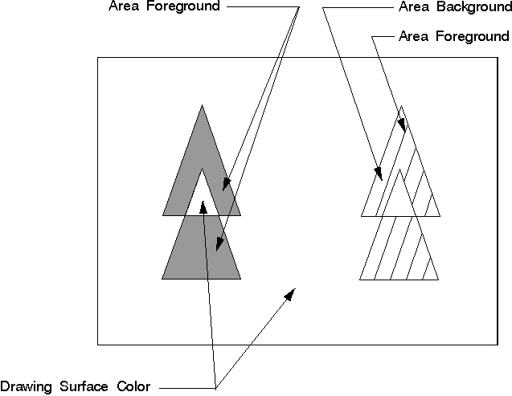

<HTML>
<HEAD>
<TITLE>Area Colors and Mix Attributes</TITLE>
</HEAD>
<BODY>
<H1>Area Colors and Mix Attributes</H1><!-- entering slot 1058 -->
<P>
The color attribute defines the color used to draw a primitive or an object.
The mix attribute determines how the color of a primitive or an object is
combined with the color of the drawing surface, or any other objects on
the surface. Both attributes also are described in <A HREF="1153_L1_ColorandMixAttribute.html">Color
and Mix Attributes</A>.
<P>
The area color defines the color used to fill the output from any of the
IBM OS/2 area functions, when necessary. The area primitive is the only
primitive in which the color can be changed during the drawing of the area.
Therefore, this attribute, more than the other area attributes, depends
on the<I> current value</I> as described in <A HREF="1046_L3_AttributeCurrentness.html">Attribute
Currentness</A>.
<P>
When a presentation space is created, the area color initial default is
black. The pattern symbol initial default, explained previously, is solid.
Areas are one of the primitives that have a foreground and background color,
as shown in the following figure. The appearance of the area also depends
on the pattern symbol.
<P>
<!-- Unable to decode bitmap format -->
<P>
Area Primitives
<P>
Area primitives have both a color and background color attribute. The background
color does not appear if the pattern symbol is solid, and the background
color is undefined if the pattern symbol is a customized, multi-colored
bit map.
<P>
When a presentation space is created, the area mix attribute initial default
is FM_OVERPAINT. The<I> overpaint</I> mix attribute specifies that the area
color is not to be modified by the color of the drawing surface. If the
area mix attribute is changed, the area color is mixed with colors that
are already on the drawing surface.
<P>
When the pattern symbol is solid, the color that fills the area, if necessary,
is the current area foreground color. If the pattern symbol is changed to
be a pattern of vertical lines, for example, the color of those lines is
the current area foreground color. Inside of the area bracket, there can
be other colors if these colors are the current color for primitives such
as lines or arcs, that are drawn within the area bracket. These colors are
not specifically defined or influenced by the area foreground color.
<P>
The area background color initial default is CLR_BACKGROUND. Usually this
is defined by the application to the same color as the drawing surface.
If the pattern symbol is solid, the area background color<I> does not</I> appear.
If the pattern symbol is changed to be a pattern of vertical lines, for
example, the color in between those lines is the current area background
color.
<P>
The area background mix attribute initial default is BM_LEAVEALONE. The
<I>leave-alone</I> background mix attribute specifies that the area background
color is not drawn. This means that for a nonsolid pattern symbol, the drawing-surface
color or the color of an object, not created by the area bracket, but on
the drawing surface, shows through the nonsolid pattern. The area background
color, for nonsolid pattern symbols, appears only if the background mix
attribute is changed to overpaint, BM_OVERPAINT.
<P>
If you have customized the pattern symbol with a bit map, the color definitions
of the area primitive change. The foreground color corresponds to the color
of the pels that are specified ON in the fill-pattern bit map. The background
color corresponds to the color of the pels that are specified OFF in the
fill-pattern bit map. The foreground and background mix attribute do not
change.
<P>
<B>Note: </B> Background color and mix attribute only apply to monochrome
(2-color) fill patterns. The bit set to 0 is defined as the background and
the bit set to 1 is defined as the foreground.
<P>
A multi-colored bit map is unaffected by the background color and mix attributes.

<P>
To specify a new color or mix attribute call<A><!-- external link: 1D 20 C4 FC --> GpiSetAttrs</A>.
This function accepts as input the type of primitive, for example PRIM_AREA,
a list of attributes that are to be changed, a list of attributes that are
to be set to their default values, and the values for the attributes that
are to be changed.<A><!-- external link: 1D 20 C4 6D --> GpiSetAttrs</A> is
useful to specify colors and mix attributes just for a specific data structure
-for example the AREABUNDLE structure.<A><!-- external link: 1D 20 C4 6D --> GpiSetAttrs
</A>also provides some protection against invalid colors.
<P>
To determine the current area color and mix attribute, call<A><!-- external link: 1D B8 C3 FC --> GpiQueryAttrs</A>.
This function accepts as input the primitive type and the attributes in
question. It returns as output an array of values for the specifically queried
attributes.
<P>
To reset the default area color and mix attribute, just as with any other
attribute specified in the <A HREF="006_L2_AREABUNDLE.html">AREABUNDLE</A>.
data structure, call<A><!-- external link: 1D 35 C4 FC --> GpiSetDefAttrs</A>.
This function accepts as input the type of primitive, for example PRIM_AREA,
the attributes to be changed, and the values that will become the new default
values. The changing of default values is important when working with segments.
Changing the default values during a series of drawing functions is not
recommended.
<P>
The area color and mix attribute also can be specified with:<!-- lm: 0x2 3 -->
<UL>
<P>
<LI><!-- lm: 0x2 6 --><A><!-- external link: 1D 31 C4 FC -->GpiSetColor
</A><!-- lm: 0x2 3 -->
<BR>
<LI><!-- lm: 0x2 6 --><A><!-- external link: 1D 49 C4 FC -->GpiSetMix</A><!-- lm: 0x2 3 -->
<BR>
<LI><!-- lm: 0x2 6 --><A><!-- external link: 1D 21 C4 FC -->GpiSetBackColor
</A><!-- lm: 0x2 3 -->
<BR>
<LI><!-- lm: 0x2 6 --><A><!-- external link: 1D 22 C4 FC -->GpiSetBackMix
</A><!-- lm: 0x2 1 -->
</UL>
<P>
However, these functions have the disadvantage of specifying the foreground
and background color or mix attribute for all primitive BUNDLE data structures
that have the respective component.
<P>
There are four queries that determine the color and mix attribute as specified
by GpiSet... functions:<!-- lm: 0x2 3 -->
<UL>
<P>
<LI><!-- lm: 0x2 6 --><A><!-- external link: 1D CD C3 FC -->GpiQueryColor
</A><!-- lm: 0x2 3 --><!-- lm: 0x2 6 -->
<UL><A><!-- external link: 1D F5 C3 FC -->GpiQueryMix
</A><!-- lm: 0x2 3 -->
</UL><!-- lm: 0x2 6 -->
<UL><A><!-- external link: 1D B9 C3 FC -->GpiQueryBackColor
</A><!-- lm: 0x2 3 -->
</UL><!-- lm: 0x2 6 -->
<UL><A><!-- external link: 1D BA C3 FC -->GpiQueryBackMix
</A><!-- lm: 0x2 1 -->
</UL>
<P>
If the area color, area background color, mix attribute, or background mix
attribute were specified individually, the aforementioned queries can return
a value inconsistent with the current area attribute.
<P>


<P><HR>

<A HREF="1038_L5_CustomFillPatternsfr.html">[Back: Custom Fill Patterns from a Font Symbol]</A> <BR>
<A HREF="1040_L3_AreaBrackets.html">[Next: Area Brackets]</A> 
</BODY>
</HTML>
